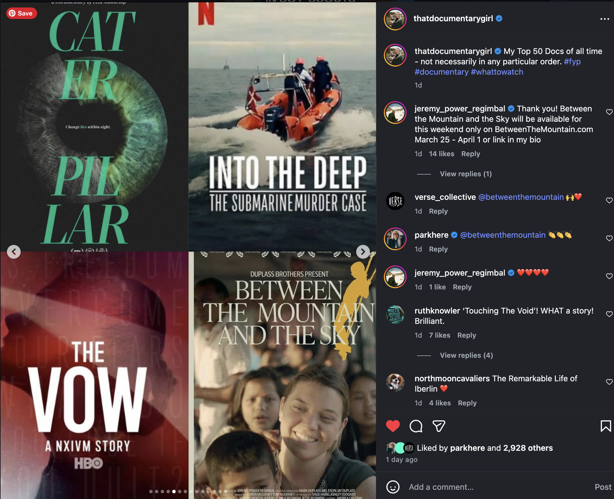
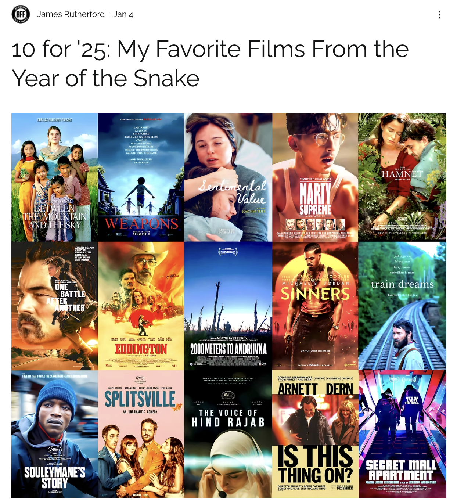
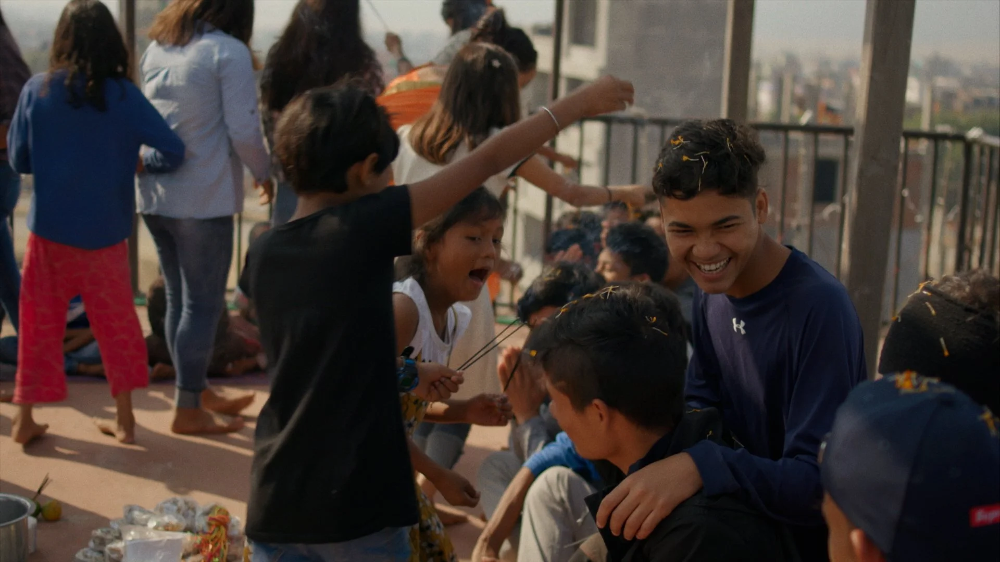
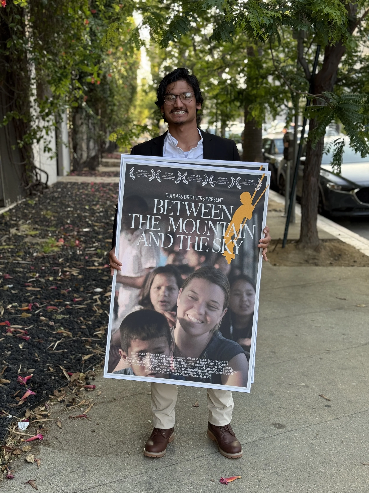
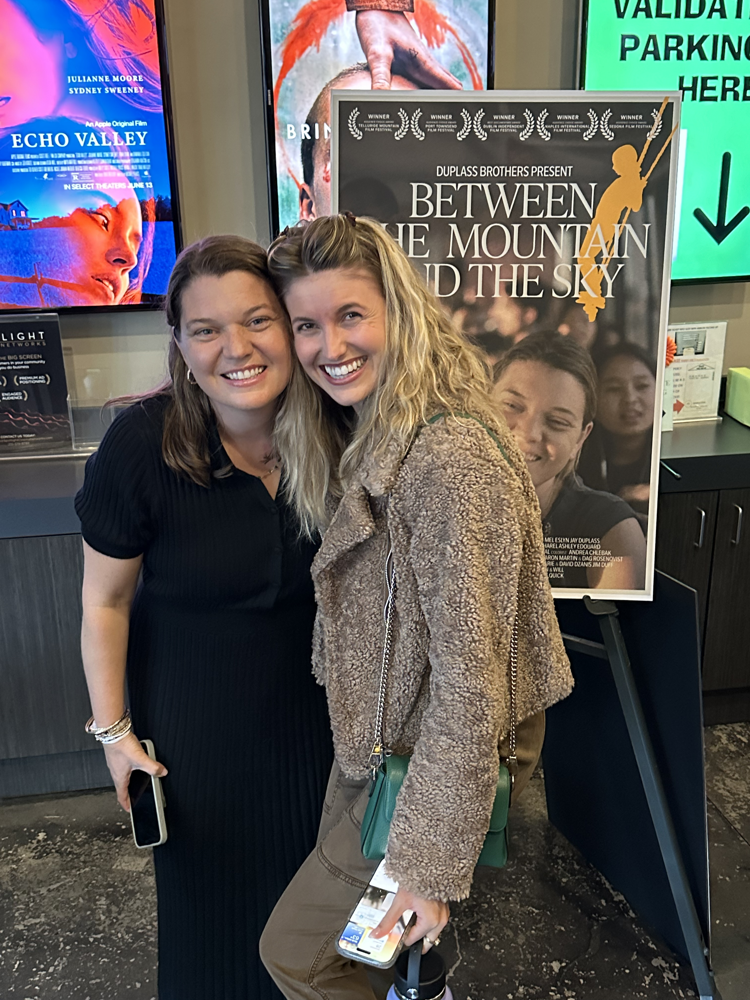
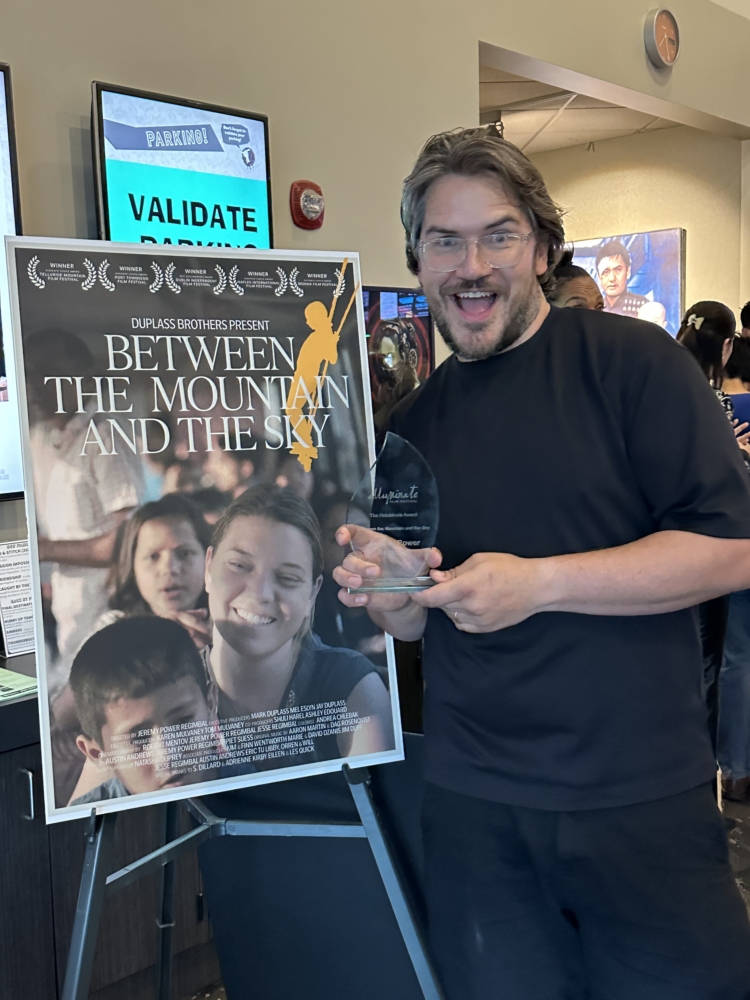
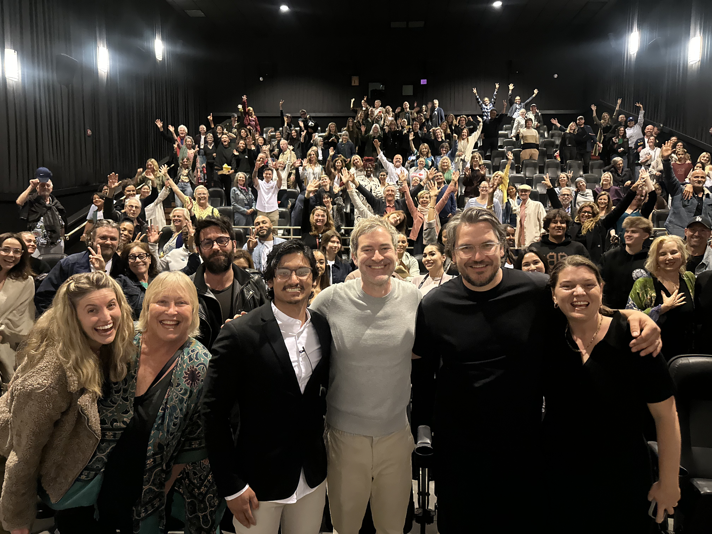
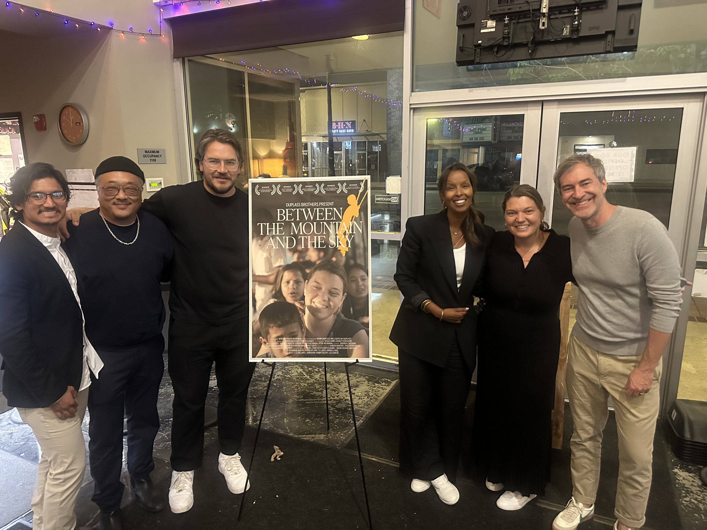

Christie Boschman places Between the Mountain and the Sky in her all-time top 50 documentaries to her 1.7 million followers.


Mark Duplass talks with Variety: “It’s indie filmmaking the way it’s meant to be: scrappy, human and a little bit punk rock.”
The free release marks the next step in the team’s commitment to accessibility and creative independence. The film has screened at over 40 film festivals worldwide and garnered more than 30 international awards.
“Meta-Romance.”
Maggie Doyne live on CNN with Jake Tapper discussing the documentary and her team’s work in Nepal.
“A reminder of what humans are capable of.”
The incredible story of humanitarian Maggie Doyne and her sojourn in Nepal.
Unger The Radar, Episode 82, by SLAM! Radio.
Director Jeremy Power Regimbal joined the Film School Radio Podcast to discuss the film.
Maggie Doyne, the North Jersey woman who is the subject of an award-winning film, now playing in Montclair.
Maggie’s interview in LA, where she talked about BlinkNow’s work and the film.
The LA Premiere was a success. Thank you to everyone who came out.
One person can change the world. No red carpet, no haute couture, no wall of fame — just Maggie Doyne and 1,500 guests at the Kinepolis in Utrecht.





DIRECTED BYJEREMY POWER REGIMBAL
EXECUTIVE PRODUCERSMARK DUPLASS · MEL ESLYN · JAY DUPLASS
KAREN MULVANEY · TOM MULVANEY
CO-PRODUCERSSHULI HAREL · ASHLEY EDOUARD
CINEMATOGRAPHY BYROBERT MENTOV · JEREMY POWER REGIMBAL · JESSE REGIMBAL
COLORISTANDREA CHLEBAK
EDITED BYAUSTIN ANDREWS · JEREMY POWER REGIMBAL · PIET SUESS
ORIGINAL MUSIC BYAARON MARTIN & DAG ROSENQVIST
MUSIC SUPERVISORNATASHA DUPREY
ASSOCIATE PRODUCERSKIM & FINN WENTWORTH · MARIE & DAVID DZANIS · JIM DUFF
JESSE REGIMBAL · AUSTIN ANDREWS · ERIC TU · LIBBY, ORREN & WILL
SPECIAL THANKS TOS. DILLARD & ADRIENNE KIRBY · EILEEN & LES QUICK